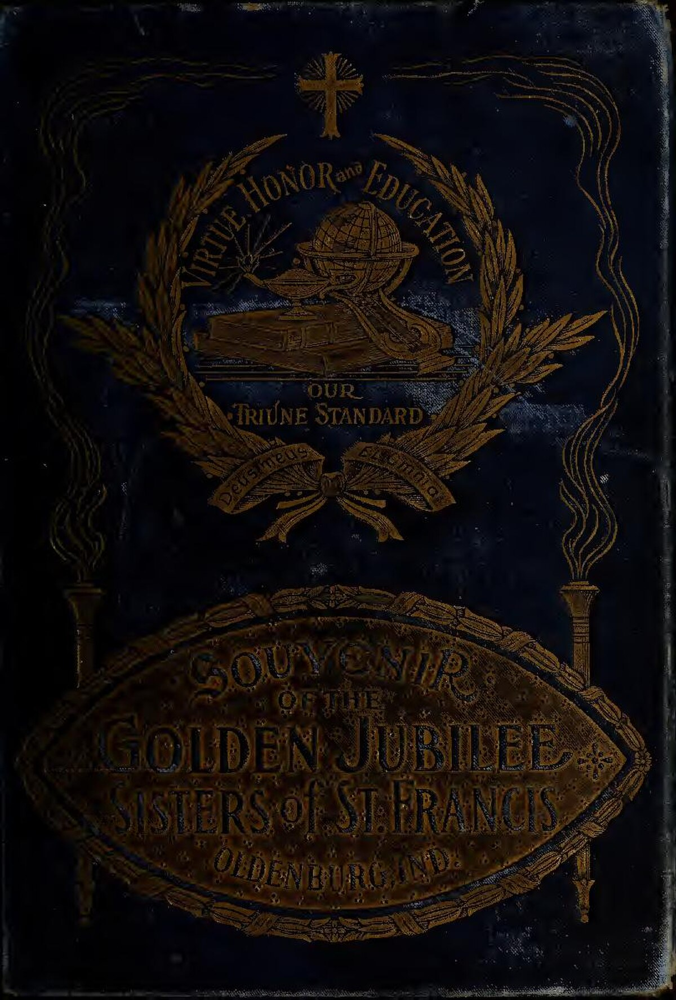
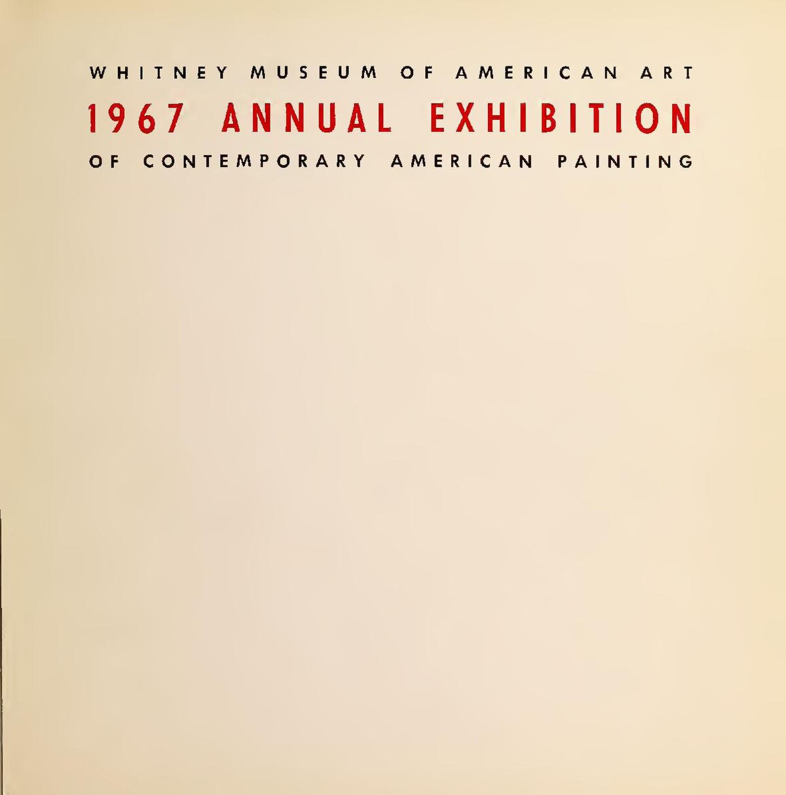
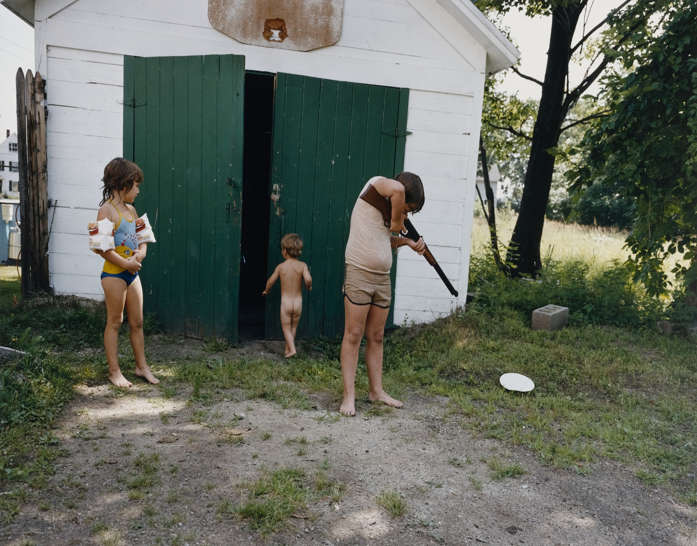
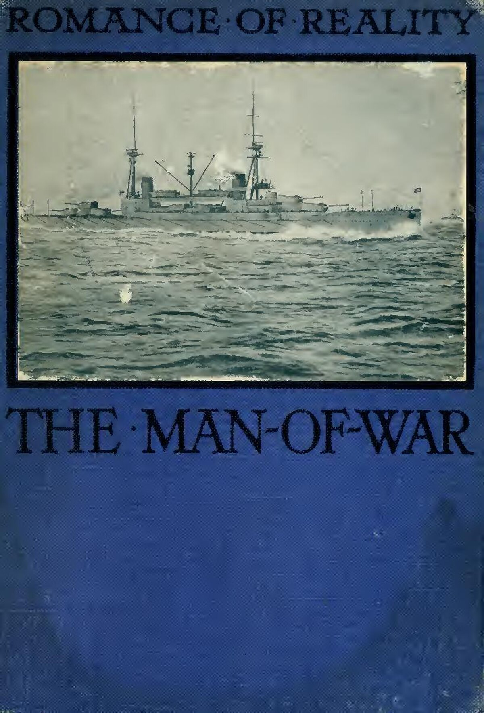
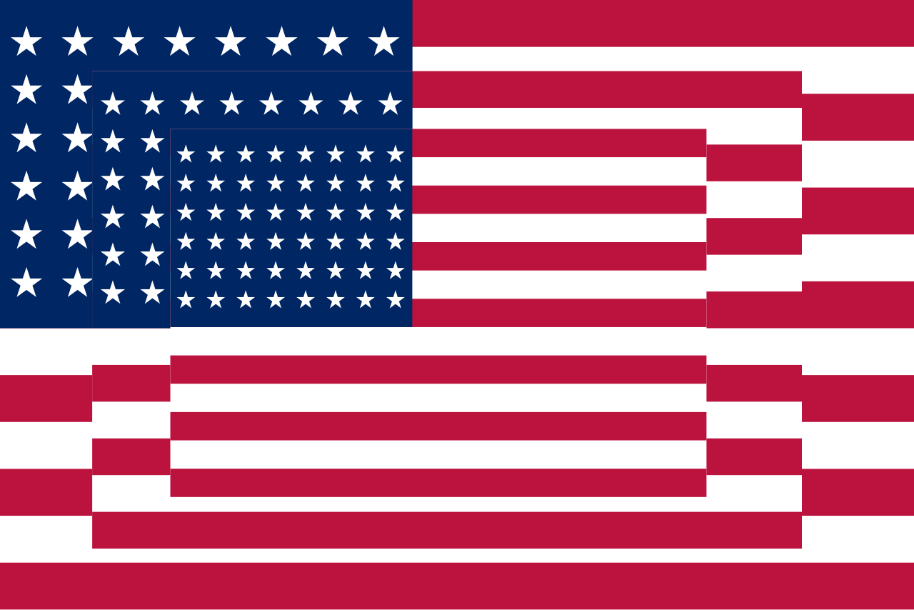

Meesterwerk: Marilyn Monroe
Andy Warhol, 1962

⚜️ UITGEBREIDE STIJLFIGUREN
🍿 MASSACULTUUR
Comics, reclame, film: Pop Art neemt beelden uit de massamedia. Mickey Mouse, soepblikken, filmsterren - het is allemaal materiaal voor kunst.
Consumentisme: Het viert én bekritiseert het kapitalisme. We zijn wat we kopen.
🍿 REPRODUCTIE
Serieproductie: Warhol's zeefdrukken, multiples. Het unieke kunstwerk is dood - lang leve de reproductie!
Mechanische technieken: Geen penseelstreken, maar druktechnieken. De machine maakt de kunst.
🍿 IRONIE
Serieus spel: Is het kritiek of viering? Pop Art doet allebei tegelijk. Het is cool, afstandelijk, grappig.
Camp: Kitsch wordt kunst. Een soepblik is mooi omdat het banaliteit verheft.
🍿 BEN POPHAM
Brits vs Amerikaans: Engelse Pop Art is intellectueel (Hamilton), Amerikaanse is hard en commercieel (Warhol, Lichtenstein).
Swinging Sixties: De tijd van The Beatles, minirokken, Londen als cultureel centrum.
📚 TIJDSGEEST CONTEXT (1955-1970)
🌍 POLITIEK PERSPECTIEF
- De wederopbouw na WOII leidt tot welvaart en consumentisme
- De "Golden Age of Capitalism"
- Maar ook: Vietnam, burgerrechten, seksuele revolutie
- Pop Art is zowel apolitiek als politiek - het toont de oppervlakte van de samenleving
📖 LITERAIR PERSPECTIEF
- De Beat Generation wordt de Pop Generation
- Andy Warhol's "Factory" als nieuw literair salon
- magazines als LIFE en Time bepalen het beeld
- De cultuur van het celebrity - iedereen kan beroemd zijn voor 15 minuten (Warhol)
🧠 PSYCHOLOGISCH PERSPECTIEF
- Oppervlakte is diepgang
- De "coolness" van Pop Art - geen emotie, geen expressie, alleen het beeld
- McLuhan: "The medium is the message
- " Identiteit wordt gevormd door wat we consumeren
⚙️ HISTORISCH PERSPECTIEF
- Televisie wordt massaal - 90% van Amerikaanse huizen heeft een TV in 1960
- De ruimtevaart (1969) verandert het wereldbeeld
- Plastic, polyester, synthetisch - nieuwe materialen voor een nieuwe wereld
- De auto wordt icoon van vrijheid
🎭 FILOSOFISCH PERSPECTIEF
- Postmodernisme wordt geboren: het einde van "grote verhalen", het einde van originaliteit
- Alles is recyclage, remix, sample
- Baudrillard's "simulacrum": de kopie is realer dan het origineel
- Warhol's Marilyn is "meer" Marilyn dan Marilyn zelf
🎨 MEESTERWERKEN - GEDETAILLEERDE ANALYSE
1. "Marilyn Diptych" (1962) — Andy Warhol
Tate Modern, Londen · 205 × 145 cm (per paneel) · Zeefdruk op doek
Achtergrond: Gemaakt na Monroe's dood in 1962. Warhol gebruikte een publiciteitsfoto uit 1953. 50 keer hetzelfde gezicht, in felle kleuren en zwart-wit. Het icoon van de icoon.
🔍 STIJLANALYSE
Herhaling: 50 identieke beelden, maar elk anders gekleurd. Het massamedium (publiciteitsfoto) wordt kunst door herhaling. Meer is meer.
Zeefdruk: De techniek is mechanisch, niet handwerk. Je ziet de "fouten" - de inkt is niet perfect verdeeld. Dit maakt het menselijk én machine.
Morte: De zwart-wit panelen aan de rechterkant suggereren verval, dood. Marilyn als martelaar van de roem. Het is een modern icoon, een heilige voor de massa.
Commodificatie: Monroe is een product geworden, net als Warhol's soepblikken. Het werk vraagt: wie bezit haar beeld? Zij, de studio's, of wij?
2. "Whaam!" (1963) — Roy Lichtenstein
Tate Modern, Londen · 174 × 407 cm · Acryl en olieverf op doek

Achtergrond: Gebaseerd op een paneel uit een oorlogsstrip (All-American Men of War). Lichtenstein vergroot het kleine stripplaatje tot een monumentaal schilderij. De banaliteit van oorlog wordt kunst.
🔍 STIJLANALYSE
Ben-Day dots: De kenmerkende stippen van strips, handgeschilderd! Lichtenstein imiteert de machine met de hand. Het is ambachtelijk fake.
Compositie: Twee panelen - links het aanvalsvliegtuig, rechts de explosie. Het is bijna abstract, maar het verhaal is duidelijk. Oorlog als entertainment.
Tekst: "WHAAM!" en "I pressed the fire control..." De tekst maakt het strip, maakt het narratief. Maar het is leeg - geen emotie, alleen actie.
Vietnam: 1963 is het begin van de Vietnam-oorlog. Dit werk is geen protest, maar het toont de verbeelding van oorlog in de populaire cultuur. Het is kritiek door imitatie.
3. "Floor Burger" (1962) — Claes Oldenburg
Art Gallery of Ontario · 132 × 244 cm · Canvas gevuld met schuimrubber

Achtergrond: Een reusachtige cheeseburger die op de vloer ligt. Oldenburg's "soft sculptures" - het harde wordt zacht, het kleine wordt groot. Fast food als monument.
🔍 STIJLANALYSE
Schaal: Een burger van meer dan 2 meter! Het alledaagse wordt absurd. Je moet eromheen lopen, eronder door kruipen. Het domineert de ruimte.
Soft sculpture: Het is van canvas en schuim, niet brons of steen. Het is knuffelbaar, slap, menselijk. De "hardness" van kunst wordt zacht.
Fast food: De cheeseburger is het ultieme Amerikaanse symbool - snel, goedkoop, overal. Oldenburg maakt er een heiligdom van. Het is bijna een parodie op het consumeren.
Ligging: Het ligt op de vloer, niet op een sokkel. Het is laag, nederig, toegankelijk. Geen museumafstand, maar intimiteit.
4. "Still Life #35" (1963) — Tom Wesselmann
Privécollectie · 244 × 305 cm · Gemengde media op doek

Achtergrond: Wesselmann's "Great American Nude" serie combineert naakten met reclame, producten, de Amerikaanse droom. Het stilleven wordt levend, commercieel, erotisch.
🔍 STIJLANALYSE
Collage: Reclame-uitknipsels, echte objecten (telefoon, lamp), geschilderde delen. Het is een explosie van consumptie en verlangen.
Kleur: Felle, onnatuurlijke kleuren - de kleuren van reclame, van billboards. Het is visueel lawaai, informatie-overload.
Vrouw als object: Het naakt is gefragmenteerd - borsten, mond, benen. Het vrouwelijk lichaam als consumentengoed, net als de Coca-Cola en de televisie.
Americana: Dit ís Amerika in 1963: tv-diners, commerciële seks, plastic geluk. Wesselmann portretteert het zonder oordeel, maar de kritiek is impliciet.
5. "President Elect" (1960-61) — James Rosenquist
MoMA, New York · 198 × 363 cm · Olieverf op doek

Achtergrond: John F. Kennedy's gezicht, een cake, een auto. Rosenquist, ex-billboard schilder, gebruikt reclametechnieken voor politieke kritiek. De American Dream als verkooppraatje.
🔍 STIJLANALYSE
Fragmentatie: Het beeld is opgedeeld in vakken, zoals billboards langs de snelweg. Je ziet het even, dan is het voorbij. De politiek als reclame.
Associatie: Kennedy + cake + auto = de belofte van geluk. Maar het is leeg, oppervlakkig. De cake is nep, de auto is een advertentie.
Schaal: Bijna 4 meter breed! Het overweldigt, net als politieke campagnes. Het is propaganda, maar dan als kunst ontmanteld.
Voorspellend: Geschilderd voor Kennedy's dood, toont het al de mythevorming. De president als product, als consumptiegoed.
6. "Just what is it that makes today's homes so different, so appealing?" (1956) — Richard Hamilton
Kunsthalle Tübingen · 26 × 25 cm · Collage op papier

Achtergrond: Het eerste Pop Art werk - een collage die de "This is Tomorrow" tentoonstelling aankondigt. De titel vraagt ironisch: wat maakt ons modern? Alles en niets.
🔍 STIJLANALYSE
Collage: Uitgeknipte beelden uit Amerikaanse magazines. Het is een puzzle van de moderne wereld. Niets is origineel, alles is geleend.
De naakte man: Met een lolly als torpedo, voor een Ford logo. De consument als naakte aap, gestuurd door verlangen en merken.
De stripvrouw: Op de bank, naakt, met een lamp als hoed. Ze is een object, een meubelstuk. De vrouw als interieurdecoratie.
Ironie: De titel vraagt serieus, maar het antwoord is absurd. Het is een kritiek op de moderniteit, verpakt als viering. Britse intellectuele Pop Art.
7. "Campbell's Soup Cans" (1962) — Andy Warhol
MoMA, New York · 32 stukken van 51 × 41 cm · Polymerverf op doek

Achtergrond: 32 soorten soep, handgeschilderd maar lijkend op drukwerk. Warhol's doorbraak - van illustrator tot kunstenaar. Het banale wordt iconisch.
🔍 STIJLANALYSE
Serie: 32 identieke formaten, 32 verschillende smaken. Het supermarktschap als kunstwerk. De keuze is oneindig, maar het is allemaal hetzelfde.
Hand vs machine: Geschilderd, maar zo vlak mogelijk. Warhol wilde het "niet-geschilderde" schilderen. Het is ambachtelijk antikunst.
Consumptie: "I used to drink it. I used to have the same lunch every day." Warhol's obsessie met herhaling, met het alledaagse.
Merken: Campbell's is een merk, een logo. Warhol maakt het heilig. Het is een kritiek op de commerciële cultuur door die cultuur te omarmen.
8. "Drowning Girl" (1963) — Roy Lichtenstein
MoMA, New York · 172 × 170 cm · Olieverf en synthetische polymeren op doek
[Afbeelding momenteel niet beschikbaar - alternatief wordt gezocht]
Achtergrond: Gebaseerd op een paneel uit het comic "Run for Love!" (Secret Hearts #83). Een vrouw verdrinkt, maar denkt: "I don't care! I'd rather sink than call Brad for help!" Drama als cliché.
🔍 STIJLANALYSE
Comic esthetiek: De stippen, de dikke zwarte lijnen, de tekstballon. Lichtenstein vergroot het kleine tot monumentaal. De "lage" kunst wordt "hoog".
Emotie: Ze verdrinkt, maar de tekst is stoer, onverschillig. Het is parodie op vrouwen in comics - altijd in nood, altijd dramatisch.
Golf: De golvende zee is abstract, decoratief. Het is bijna Japans, zoals Hokusai's "Grote Golf". Pop Art en traditionele kunst ontmoeten elkaar.
Brad: Wie is Brad? Het maakt niet uit. Het is een naam, een archetype. Het is het verhaal van elke vrouw in nood, in elke soap, ooit.
9. "Three Flags" (1958) — Jasper Johns
Whitney Museum, New York · 78 × 116 cm · Encaustic (heet was) op doek

Achtergrond: Drie vlaggen, steeds kleiner, als een telescoop. Johns schilderde "dingen die al bekend zijn". De vlag als icoon, als abstractie, als vragensteller.
🔍 STIJLANALYSE
Encaustic: Heete was met pigment - een oude techniek. Het oppervlak is ruw, tactiel, bijna sculpturaal. Je wilt het aanraken.
Drie lagen: De grootste vlag is voor, de kleinste achter. Het is een put, een oneindige regressie. Hoeveel vlaggen zijn er? Drie? Oneindig?
Bekend vs gezien: We zien vlaggen elke dag, maar kijken we? Johns forceert ons te kijken. Het bekende wordt vreemd.
Patriotisme: Is het een viering of een vraag? Johns weigerde te zeggen. Het is een vlag, maar ook slechts verf op doek. Semiotiek als kunst.
10. "The Car Crash" (1960) — Jim Dine
Privécollectie · 183 × 244 cm · Olieverf, collage en voorwerpen op doek

Achtergrond: Dine's "Happening" periode - het schilderij als theater. Een auto-ongeluk, een rood kruis, echte voorwerpen geplakt op het doek. Het is agressief, chaotisch, fysiek.
🔍 STIJLANALYSE
Assemblage: Geschilderd én echte dingen - een hamer, stukken hout. Het doek wordt reliëf, sculptuur. De grens tussen schilderij en object vervaagt.
Trauma: Auto-ongelukken zijn Amerikaans - snelheid, dood, film. Maar het rood is ook hart, liefde. Het is een gevoel van crisis.
Actie: Dine maakte dit tijdens performances. Het schilderen werd theater, lichamelijk, spontaan. Abstract Expressionisme ontmoet Pop Art.
Persoonlijk: Andere Pop Art is cool, afstandelijk. Dine is emotioneel, ruw. Het is meer als de Expressionisten - kunst als catharsis.
📚 CONCLUSIE: WE ARE WHAT WE BUY
Pop Art leert ons:
- Dat alles beeld is: Van Marilyn tot een soepblik - het is allemaal icoon
- Dat kopieën realer zijn: Warhol's Marilyn is "meer" Marilyn dan zijzelf
- Dat kunst commercieel kan zijn: En toch kunst blijven
- Dat ironie wapen is: Lachen om de consumentencultuur is ook kritiek
- Dat massa ≠ slecht: Comics en reclame zijn ook esthetisch
Pop Art is de brug naar Postmodernisme: het einde van het origineel, het tijdperk van de simulatie.